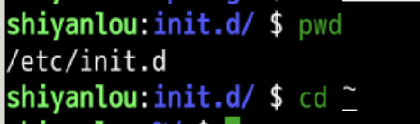
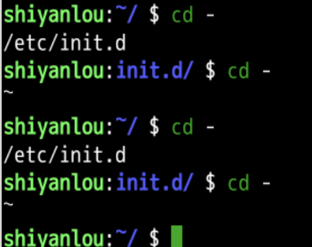
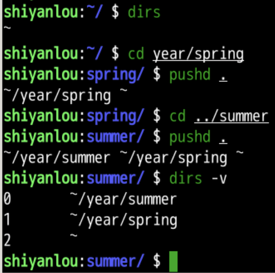
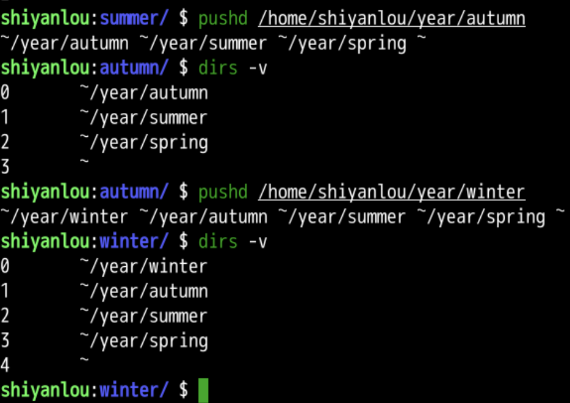
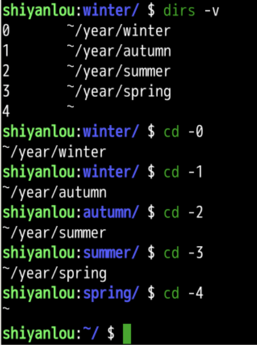
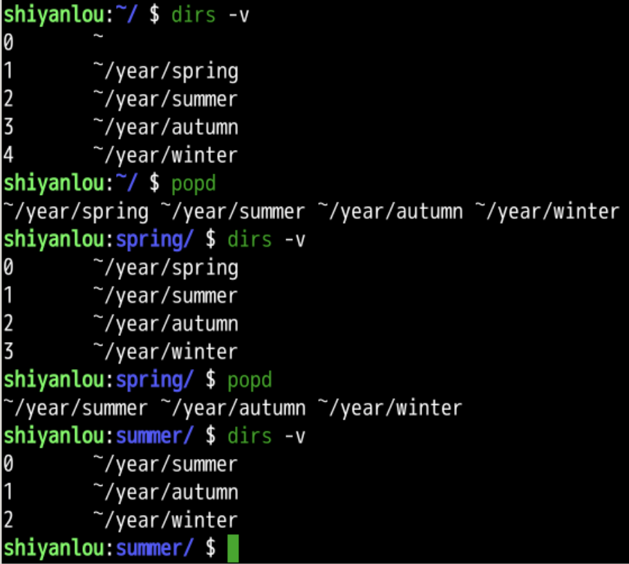
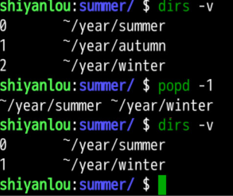

路径堆栈
回忆
- 上次研究了
- realpath
- 可以将相对路径输出为绝对路径
- find
- 可以根据文件名来查询文件
- 通配符有两个
-
- ?
-
- realpath
- 路径好多好复杂
- 可以把曾经进入过的路径记录下来吗？

用户文件夹~
- ~就是当前用户的用户文件夹
- 当前用户是shiyanlou
- 用户文件夹是
- /home/shiyanlou

- cd ~
- 可以进入用户文件夹
- ls ~
- 可以查看~下的文件和文件夹
上一个文件夹 -
-
- 就是上一个路径
- 就是cd之前的路径

- 这样很容易来回跳转
- 但是很久之前的路径找不到了怎么办？
dirs
- 我们可以试一下这个路径堆栈
- dirs可以查询目前路径堆栈中所有的路径

- 可以支持绝对路径么？
绝对路径
- 尝试

- 绝对路径也是支持的
- 通过这个路径堆栈如何调转呢？
跳转
- 可以用编号来跳转

- 那如何调整路径堆栈呢？
popd弹栈

- 可以把前面的路径删除掉
- 如果我想只删除某个路径呢？
指定路径删除

- 可以删除指定路径
- 1号路径autumn
总结
- 我们这次研究了路径堆栈
- dirs
- pushd
- popd
- 可以控制一个路径堆栈
- 这样跳转的时候就可以快速进行跳转
- 不用来回来打路径了
- 可以文件夹和文件可以复制么?🤔
- 下次再说👋